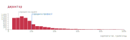
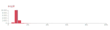

Над проектом працювала Євгенія ДРОЗДОВА
Відповідно до закону Україні “Про запобігання корупції” подавати декларацію мають усі публічні службовці. Повний перелік міститься в п.1 ст. 3 цього закону. Однак, серед декларантів ми знайшли велику кількість представників професій, які наче не підпадають під дію Закону - водії, слюсарі, трактористи, касири та ін. Відповіді від НАЗК з цього приводу того, чому так відбувається і наскільки розповсюджене це явище, ми так і не дочекались. З іншого боку, що ширшою є база декларацій, то більше уявлення ми маємо про реальний стан зарплат в держсекторі.
Тож ми проаналізували декларації за 2018 рік, виокремили найбільш популярні (за кількістю поданих декларацій) професії та подивились на розподіл зарплат. Загальну суму задекларованої за рік зарплати ми поділили на 12 місяців - для зручності сприйняття інформації. Знайдені професії ми розділили на умовні сфері, аби було легше орієнтуватись в їх переліку.
Візьмемо для прикладу директорів (див. графік нижче). Середня зарплата в професії майже вдвічі вища за середню по країні (синя і сіра пунктирна лінії на графіку). По вісі Y частота. Тобто зарплати директорів починаються з мінімальної, але більша їх частина (найвищі стовпчики) припадають на проміжок до 20 тис. грн. Водночас, деякі директори заробляють до 100 тис. грн на місяць, але, як ви можете побачити, їх небагато.
У водіїв картинка буде відрізнятись (див. графік нижче). Зарплати водіїв також стартують з мінімальної, однак середня зарплата майже дорівнює середній по країні і саме стільки заробляє абсолютна більшість водіїв серед тих, хто подав декларацію. Трохи більше 20 тис. грн - максимальний поріг для цієї професії.
Клікайте на «плюс» біля назви професій, щоб додати графік. Щоб прибрати графік, клікніть на графік. Чим вищі стовпчики, тим більш розповсюджена професія. Чим далі стовпчики від 0, тим вища зарплата.
По замовчуванню усі графіки мають однакову шкалу Y. Таким чином, Ви можете оцінювати репрезентативність даних для обраної професії. Що більша кількість декларацій, то вища репрезентативність. Наприклад, графік “водіїв” містить дані понад 10 тис. декларацій, в той час графік для професії “ординатор”лише близько 500 декларацій. Це означає, що треба обережніше узагальнювати наявні дані на всіх представників професії. Якщо вас цікавлять тільки зарплати, Ви можете активізувати власну шкалу для кожного графіка - кнопка "Єдина Y-шкала".
Сіра пунктирна лінія - середня зарплата по країні за 2018 рік (дані мінфін). Синя- середня зарплата в професії за наявними деклараціями.